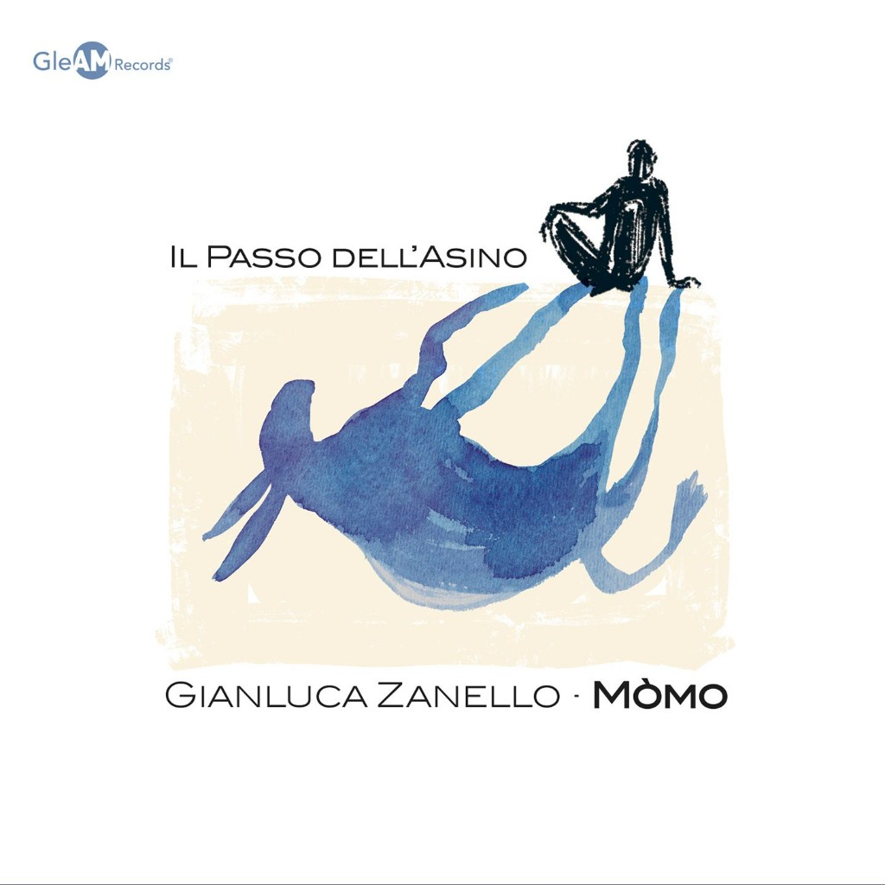

Gianluca Zanello
Federico Calcagno
Filippo Rinaldo
Gianluca Zanello
Michele Sannelli
Sophia Tomelleri
Stefano Grasso
Stefano Zambon
Upcoming album

February 19th 2027
A volte alcune cose non si vedono O magari sono sempre lì dove le avete lasciate. A volte le persone non parlano O forse sono sempre in ascolto. A volte i sogni si dimenticano nel cassetto… Solo ad aspettare la stagione giusta. A volte la musica si spegne perché dopo il silenzio è ancora più bella. Ogni tanto i pesci nuotano lontano in cerca di qualcosa, ma ad un certo punto tornano a riva.
C’è una storia che vuole essere raccontata
Occhi e orecchie aperti che da qualche parte
è il momento di fare il primo passo